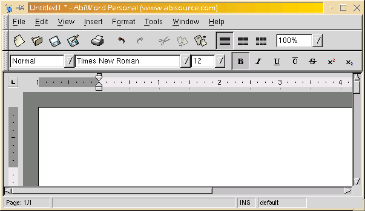
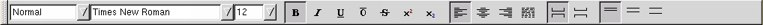

| |
|
About AbiWord About Open Source Index Contents What's New Check Version Introduction Installation Getting Started The Workspace Entering Text Formatting Edit Commands Paragraphs Styles Inserting Objects Printing Preferences Shortcuts abisource.com FAQ Credits Search |
TheWorkspaceIt is very similar to other word processors on the market. Here is the screen that appears when you start the program:  This main window is composed of several differnent bars and it is important to know the names of them and what their function is: The titlebarIt contains the path and filename of the current document (by default
Untitled), the name of the program, and the Minimize, Maximize/Restore,
and Close buttons common to all windows. The menubarThis bar contains all the pull-down menus; these menus contain all the commands available in AbiWord in a hierarchical menu. You can open a menu by clicking on its title. The Standard toolbarThis toolbar contains the icons the most commonly used commands in AbiWord so that you don't have to use the menus for them. The Format toolbarThis toolbar contains the most commonly used formatting commands so that you can format text without having to use the menus. The rulerThe ruler lets you easily format paragraphs by setting indents, alignments, and margins. It can be set to use either inches or centimeters by selecting Options from the Tools menu. The scrollbarsWhen there is not enough room in the AbiWord window to show the whole document, the scrollbars let you move through it. There can be scrollbars below or to the right of the page in the workspace. To scroll the document, click on the arrows at the end of the scrollbar or click on the gray bar and slide it. The status barThis has several pieces of information, notably the current page number and the total number of pages in the document. It also describes the command the mouse is on when you pull a menu down from the menubar.
|